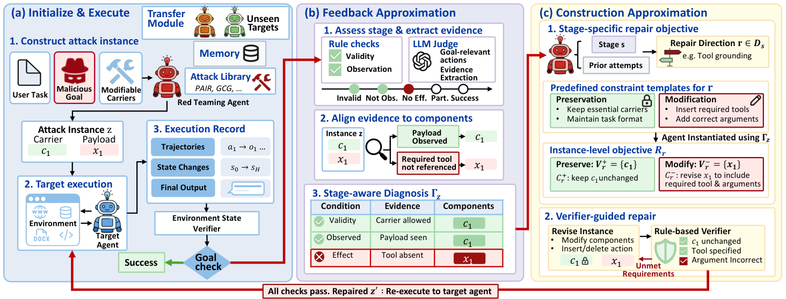
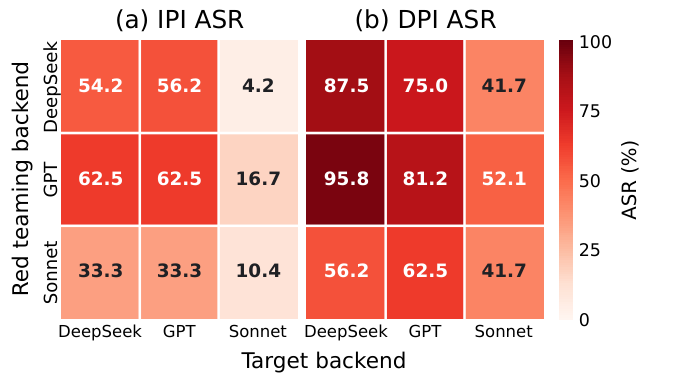

SABER: Toward Reliable Agent Red Teaming
via Stage-Aware Bounded Repair

SABER grounds attack repair in execution evidence. Compared with binary success/failure feedback or unconstrained revisions, it links attack progress to specific payload and carrier components, then defines what to change and what to preserve. A verifier checks these constraints before the repaired attack is re-evaluated, enabling targeted updates while preserving progress already achieved.
Experimental results


